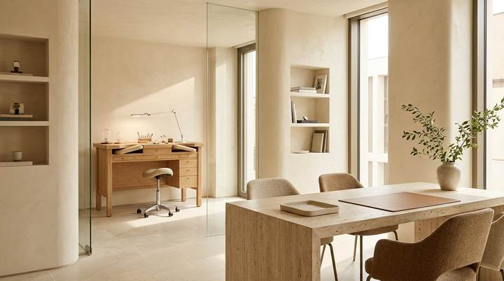
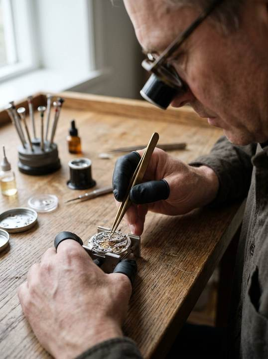

A Commitment to the Art of Timekeeping.
Located in Lower Parel, Mumbai, Asian Times is dedicated to the thoughtful servicing, restoration, and repair of mechanical, automatic, and quartz watches.

Quiet Precision in the Heart of Lower Parel.
Every watch brought to our bench carries its own story—a daily companion worn through years of work, a cherished family piece, or a mechanical instrument admired for its engineering.
At Asian Times, we believe watch servicing should be calm, transparent, and unhurried. Rather than treating watch care as a rushed transaction, we take the time to inspect each timepiece properly, explain its condition in plain language, and carry out the required work with respect for the watch's original design.
Methodical Work at the Bench.
A timepiece is only as reliable as the care taken during its assembly. When a movement is opened at Asian Times, each component is organised in dedicated dust-protected trays. We use movement holders matched to the calibre diameter so bridges and plates never experience uneven pressure.
Whether we are performing a complete mechanical overhaul, cleaning a quartz gear train, or replacing a worn gasket, we follow clean horological practices—using non-magnetic tweezers, properly dressed screwdriver blades, and appropriate synthetic lubricants.

Respect for Every Surface & Component.
Good watchmaking is defined as much by what is preserved as by what is repaired. Lifting hands without marking a dial, opening a caseback without slipping, and sizing a bracelet without scratching polished lugs all require patience and the right tooling.
Before returning any watch, we check hand alignment, calendar changeover, crown winding smoothness, clasp security, and overall cleanliness so you can wear your timepiece with confidence.
Our Commitment to Customer Service.
Entrusting a valued watch to a workshop requires confidence. We build that confidence through clarity and straightforward communication.
Honest Assessments
If your watch only needs a simple regulation, gasket renewal, or battery change rather than a full overhaul, we will tell you clearly.
No Unapproved Work
We inspect your timepiece first and discuss the recommended servicing or repair steps with you before proceeding.
Direct Communication
Reach us directly by phone or WhatsApp at +91 9819451443 for enquiries, updates, and consultation scheduling.
Asian Times in Lower Parel, Mumbai.
We welcome you to visit us in Lower Parel or reach out on WhatsApp to discuss your timepiece.
- Business Name
- Asian Times
- Location
- Lower Parel, Mumbai, Maharashtra, India
- Telephone
- +91 9819451443
- Chat on WhatsApp (+91 9819451443) →